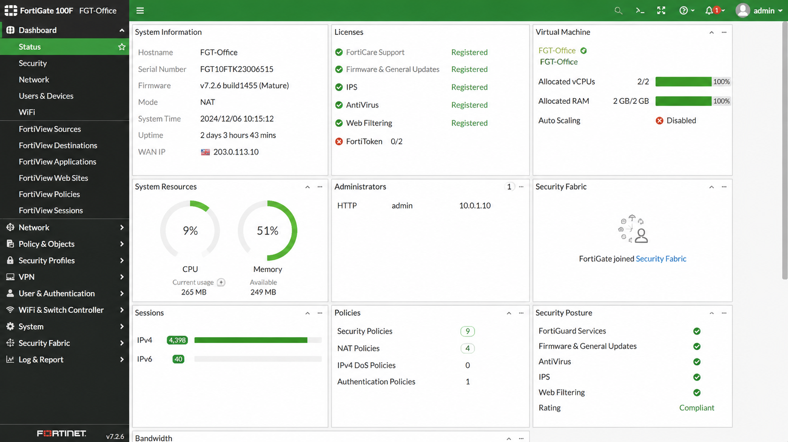

Objective
This check verifies that the firewall is operational and healthy.
Firewall issues can impact:
- Internet connectivity
- VPN access
- Network security
- Business operations
Prerequisites
- Access to the firewall management interface
- User account with read or admin permissions
Verify Firewall Status
Open the firewall management interface and verify that:
 Example: FortiGate → Dashboard → Status
Example: FortiGate → Dashboard → Status
- The firewall is online
- No critical alerts are present
- CPU and memory usage are normal

Result Interpretation
- ✅ OK – Firewall is operational and healthy.
- ⚠️ WARNING – Firewall operational but warnings or high resource usage detected.
- ❌ NOK – Firewall offline, critical alerts detected, or unstable.